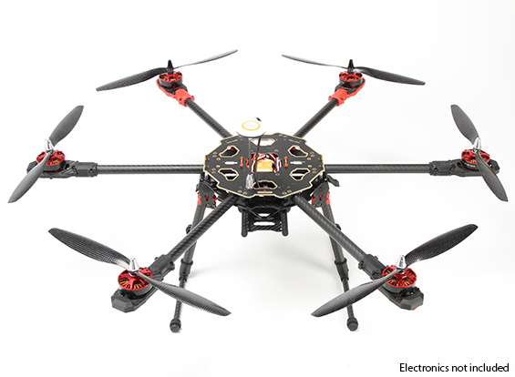

Teach 07 : Team Activity - Dynamic Allocation and Pointers
You've been hired as an intern at a startup that is developing a new, low-cost hexcopter.
You've been asked to write some of the automatated flight controller code, specifically the part that deals with keeping track of the rotational speed of the propellers. The project manager wants you to write a program that can take in a set of propeller speeds, store them as an array of floats sort them from slowest to fastest, then print the sorted values. At first, this sounds kind of easy, but as with most sofware projects, there are some complications.
First, the project lead wants this to work with drones with any number of propellers, not just six, so you won't know the number of speeds you'll be dealing with until the program is running.
Second, the hexcopter hardware uses a brand new, custom architecture, and as of yet, the STL hasn't been ported to that chip, this means you'll be unable to use a vector.
Third, because you need to keep track of which propeller corresponds to which speed, you can't rearrange the elements in the original array.
Finally, because the amount of memory you have to work with is extremely limited, you are not allowed to duplicate the array of floats, because in the future they will be storing more complex objects (custom classes) that contain other data.
Since this is a complex project, you'll be working on it in various phases.
You will be provided with a skeleton ta07.cpp file that contains tests for the program. As you complete each core requirement, remove the comments necessary to test each section.
Instructions
Divide into smaller teams of 2-3 and complete this project together. Make sure that you are rotating among the different teammates for who gets to be the "driver" each week.
Begin with the file /home/cs241/ta07.cpp
Core Requirements
Dynamically allocate an array of floats to store the hexcopter propeller speed. Also make sure to delete this array at the end of the program. This means you should:
- Prompt for the number of floats (see provided code).
- Dynamically allocate an array of floats.
- Prompt the user for floats to fill up the array.
- Delete the array at the end of main.
-
Write a function,
getValueFromPointer, that accepts a pointer to a float and returns the actual floating point value. (A prototype is provided for you. You need to write the body of this function.)Use this function to print the value of each element in the array.
-
Write a function,
getMinValue, that accepts two pointers to floats and returns a pointer to whichever refers to the smallest number. You should use the function you wrote for Part 2 to get the values to compare. (A prototype is provided for you. You need to write the body of this function.)Use this function to print the smaller of the first and last elements of the array.
Hints / Examples:
// Ex: Dynamically allocate an array of ints:
int arraySize = 12;
int* myArray = new int[arraySize];// Ex: delete the array from earlier:
delete [] myArray;// Ex: How to get the address of an array element and store it in a pointer
int* pZero = &myArray[0];
// Dereference that point to get its value
cout << "The value at addresss: " << pZero << " is " << *pZero << endl;
Stretch Challenges
Make sure everyone on your team has completed their core requirements, before moving on to the stretch challenges.
Create an array of pointers to floats and set it to point to each item in the original array, and display them. This means you need to:
- Dynamically allocate an array of float pointers.
- Loop through your original array and put a pointer to each of those items into your new array. In other words, spot 0 in the pointer array should have a pointer to spot 0 in the original array, and so forth.
- Next, loop through the items in your pointer array, and use the pointer to get the value and display it.
- Don't forget to delete your dynamically allocated array at the end of main.
The following examples may be helpful in working with an array of pointers:
// Ex: create an array of pointers to ints: int arraySize = 10; int **myArray = new int*[arraySize]; // Store the address of an int int someInt = 5; int* addressOfSomeInt = &someInt; myArray[0] = addressOfSomeInt; // Shortcut int anotherInt = 11; myArray[1] = &anotherInt;Write a function to swap elements of the pointer array, swap the first and last values, and display them. This means you need to do the following:
- Write a function that can swap two elements of the pointer array WITHOUT modifying the original array of values.
- Use this function to swap the first and last elements of the pointer array.
- Loop through the original array of values, display them, and ensure they have not changed.
- Loop through the array of pointers and use the pointers to display the values and ensure that the first and last are in a different order.
Write a function that uses your swap function and your comparison function to sort an array of pointers from the smallest value (not the smallest pointer address) to the largest value.
Instructor's Solution
As a part of this team activity, you are expected to look over a solution from the instructor, to compare your approach to that one. One of the questions on the I-Learn submission will ask you to provide insights from this comparison.
Please DO NOT open the solution until you have worked through this activity as a team for the one hour period. At the end of the hour, if you are still struggling with some of the core requirements, you are welcome to view the instructor's solution and use it to help you complete your own code. Even if you use the instructor's code to help you, you are welcome to report that you finished the core requirements, if you code them up yourself.
After working with your team for the one hour activity, click here for the instructor's solution.
Submission
When you have finished this activity, please fill out the assessment in I-Learn. You are welcome to complete any additional parts of this activity by yourself or with others after class before submitting the assessment.